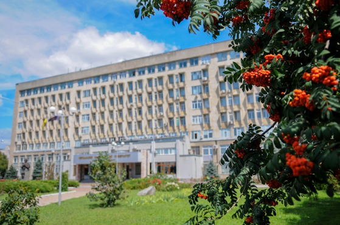
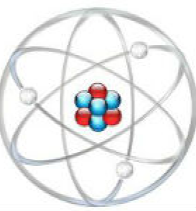
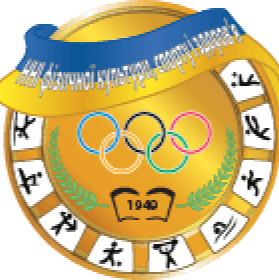
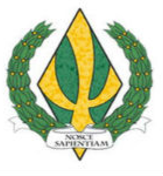
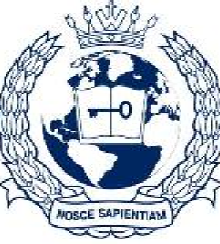

Мій університет

Черка́ський націона́льний університе́т і́мені Богда́на Хмельни́цького — заклад вищої освіти IV рівня акредитації у м. Черкаси, освітній, науковий, культурний та інтелектуальний центр Шевченкового краю. Головним завданням університету є підготовка конкурентоспроможних фахівців, розвиток науки, патріотичне й морально-духовне виховання особистості.
Факультети

Навчально-науковий інститут інформаційних та освітніх технологій
НК № 3
Навчально-науковий інститут економіки і права
НК № 1
Навчально-науковий інститут іноземних мов
НК № 3

Навчально-науковий інститут фізичної культури, спорту і здоров’я
НК № 2

Психологічний факультет
НК № 4

Навчально-науковий центр «Інститут міжнародної освіти»
НК № 3